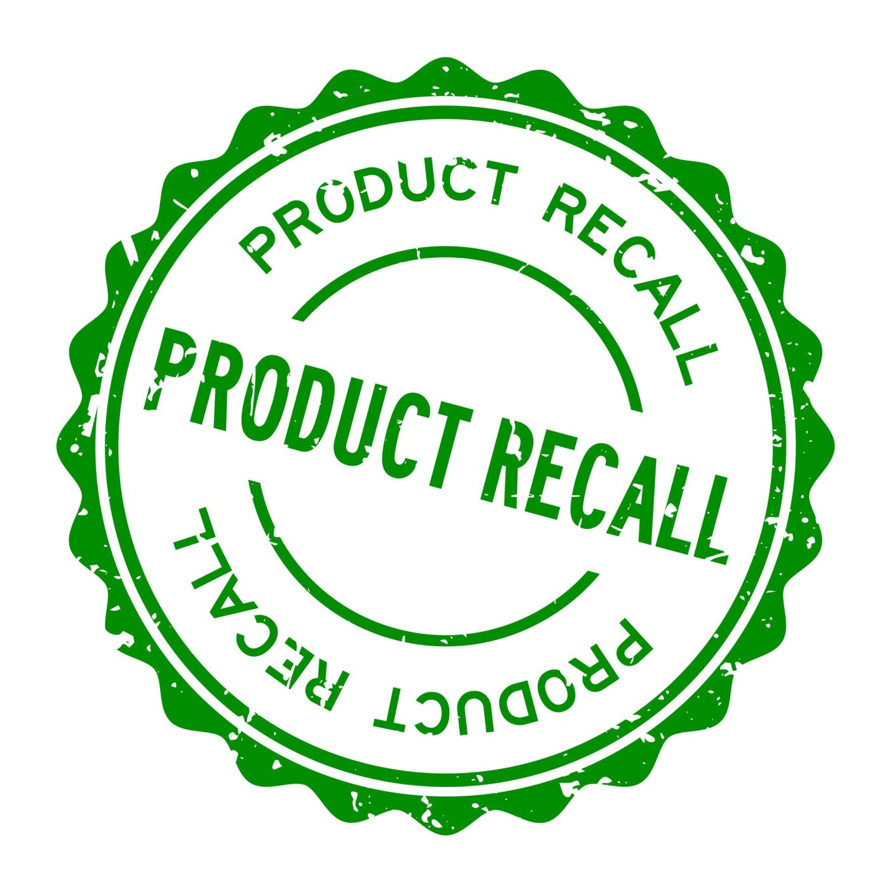

Why do you need to invest in traceability?
-

Decrease Waste/Loss
Traceability can also assist you improve the efficiency of your farm's labor. Transparency regarding a product's route through the supply chain, as well as its degree of quality and freshness, reduces food waste.
-
Improve Productivity and Profits
Improved traceability can assist boost revenues by enabling for more precise pay calculations, such as piece rate pay techniques. By enhancing production incentives, piece rate calculations can save your farm money.
-
Create and Maintain Consumer Trust
A traceability software can assist alleviate this load by providing individual labels for each distributor with lot numbers so that the product can be tracked all the way back to the farm.
-

Can Deal with Recalls Quickly
This is something that happens in the food and manufacturing industries. While you may not always be able to avoid it, you can be prepared to deal with it swiftly and effectively if it occurs in your company.